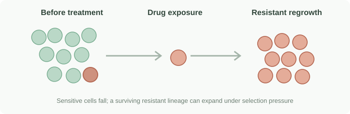

The Red Queen's strange rule
The chapter's title comes from Lewis Carroll's Through the Looking-Glass. The Red Queen tells Alice that in her country one must keep running simply to remain in the same place.
Mukherjee uses this as a metaphor for the struggle against cancer.
We develop a therapy. Cancer cells evolve resistance. We develop another therapy. Cancer may find another escape route. The struggle continues even after a medical breakthrough.
This does not mean treatment is pointless. Longer survival and improved quality of life are real achievements. It means that cancer is an evolving biological problem, not a fixed opponent that always remains vulnerable to the same attack.
Jerry Mayfield responds to Gleevec
In August 2000, Jerry Mayfield, a forty-one-year-old police officer from Louisiana with chronic myeloid leukemia, began treatment with Gleevec.
At first, the response was excellent. His blood counts improved and the proportion of leukemic cells in the marrow fell. He felt stronger and healthier.
Mayfield experienced precisely the kind of success that had made imatinib revolutionary.
But by the winter of 2003, the response was deteriorating. His physician, Moshe Talpaz, increased the medicine's dose in an attempt to regain control.
The strategy failed. The leukemia returned in his marrow, blood, and spleen.
How could a drug that so directly targeted the cause of CML stop working?
Cancer is a population, not one unchanging cell
A tumor contains many cells that reproduce over time. As those cells divide, some acquire additional genetic changes.
Most changes are neutral or harmful to the cell. Occasionally, however, a change provides an advantage in a particular environment.
For example, if a drug kills ordinary leukemia cells but a rare mutated cell can survive the drug, that cell may multiply while competing cells disappear.
The treatment then creates selection pressure. It does not have to intentionally create the resistant mutation; it can favor cells that already possess or later acquire resistance.
This is a form of evolution within the patient's body.
How cancer can resist conventional chemotherapy
Mukherjee briefly reviews several known strategies by which malignant cells can evade medicines:
- Some activate molecular pumps that remove drugs from the cell.
- Others produce molecules that inactivate or neutralize a medicine.
- Some survive in anatomical locations that the drug does not easily reach.
- Others alter biological processes so the original drug no longer causes the expected damage.
The central point is that 'resistance' is not one mechanism. It describes different biological solutions to the same survival problem.
Targeted therapy was expected to be more precise, but precision introduced its own risk: if the drug depends on binding one molecular structure, the cancer can sometimes change that structure.
Changing the target itself
Charles Sawyers and colleagues studied patients whose CML had stopped responding to Gleevec.
They found changes in the BCR-ABL protein. Some mutations altered the shape of the region where imatinib needed to bind, allowing the kinase to continue driving leukemia while making drug binding ineffective.
Imagine a lock and key. Gleevec is a carefully shaped key designed to lodge in a pocket and prevent an unwanted mechanism from operating.
Now imagine that the lock changes shape. The key may no longer fit—even though the lock still performs the action that causes the problem.
That is why simply raising the dose does not always restore efficacy. The issue may not be an insufficient amount of medicine but a changed molecular target.

A second-generation inhibitor: Dasatinib
Sawyers reasoned that a drug with a different binding behavior might overcome some forms of imatinib resistance.
Working with pharmaceutical chemists, his group helped investigate another kinase inhibitor called dasatinib.
In 2005, dasatinib showed substantial activity in patients with Gleevec-resistant CML. Mayfield's leukemia responded again, and he regained remission on the new treatment. The book reports that his remission was continuing in 2009.
This illustrates a practical strategy: when a disease evolves around one treatment, clinicians may need a medicine that attacks the same vulnerability in a different way, or a different vulnerability altogether.
Not every resistance mutation responds to every replacement drug. Molecular details still matter.
Why CML is not a universal model for all cancer
The remarkable results in CML encouraged development of drugs aimed at other abnormal proteins and signaling pathways.
But many common solid tumors are more genetically complex than CML. They may contain several cooperating drivers, different subpopulations, and multiple routes to resistance.
The result is a larger problem than simply finding the next inhibitor. Doctors must decide when to combine treatments, when to switch, and how to interpret the evolving biology of an individual tumor.
This is why targeted therapy is both a breakthrough and the beginning of another difficult field of research.
Multiple myeloma: Managing a disease across years
Mukherjee turns to multiple myeloma, a cancer affecting plasma cells, which are specialized immune-system cells.
Earlier treatment relied heavily on conventional cytotoxic chemotherapy. Newer medicines—including bortezomib, thalidomide, and lenalidomide in the period the book describes—allowed doctors to use combinations and change regimens when the disease progressed.
These medicines have different mechanisms, and none should be understood as a universal cure for every patient.
The historical improvement is that some patients could live substantially longer, even when their cancer could not be permanently eliminated.
Mukherjee recalls one man who initially wanted only to survive long enough to see his daughter graduate from high school. Several years later, he was alive to attend her college graduation.
The significance of extra years becomes clearer when expressed in birthdays, marriages, friendships, and ordinary events rather than only survival curves.
A changing understanding of success
There is a difference between curing cancer and controlling it for an extended period.
| Cure | Long-term control |
|---|---|
| Disease is eliminated or is no longer expected to recur under the usual clinical definition | Disease may remain but be held in check |
| Further treatment may not always be needed | Ongoing or changing treatment may be required |
| Relapse risk may become very low | Resistance or progression remains a concern |
| Goal is lasting eradication of clinically relevant disease | Goal includes survival, function, and quality of life |
Both outcomes can matter deeply to patients. The book asks readers to avoid defining the entire value of cancer medicine by the narrow question of whether every malignant cell has been destroyed.
The Red Queen also runs through public health
Mukherjee extends the metaphor beyond chemotherapy.
Cancer prevention depends on human behavior, industry, policy, and social relationships—all of which change over time.
An antismoking campaign may reduce cigarette use for years, but advertising, new social norms, and shifting demographics can reverse part of that progress. A successful public-health strategy cannot simply be invented once and then forgotten.
The environment in which prevention operates keeps changing, so prevention must also adapt.
Framingham: Studying how behavior spreads
In 2007, Mukherjee visited Framingham, Massachusetts, known for a long-running epidemiological study begun in 1948.
Researchers had tracked thousands of people over many years, collecting information about health, habits, and relationships.
Nicholas Christakis and James Fowler studied patterns of smoking within social networks. Their work suggested that smoking behavior was associated not only with individual preferences but also with relationships among friends, relatives, and other connected people.
This does not mean every connection proves that one person caused another to smoke or quit. Social-network observations require careful interpretation. The book uses the findings to explore how habits can cluster and change together.
Prevention is not purely an individual choice
Imagine a student who decides not to smoke while everyone around them smokes regularly. Their decision is influenced by a social environment that makes smoking seem ordinary.
Now imagine that the surrounding group begins quitting and supporting tobacco-free routines. The same person's decision may become easier to sustain.
Social attitudes, advertising, policy, and workplace practices can all influence behavior. Prevention therefore takes place not only in a doctor's office but also in families, schools, workplaces, industries, and governments.
This is the second battlefield of cancer: society itself.
New chemicals, new uncertainties
Mukherjee also considers how modern industry continually introduces new substances into the environment: industrial chemicals, pharmaceuticals, plastics, pesticides, and other exposures.
Some may affect cancer risk; many may not. Scientists must distinguish genuine risks from harmless or useful substances.
The book discusses anxieties around cell phones and cancer as an example of why scientific caution matters. Early signals or correlations do not automatically establish causation.
A reliable assessment may require large populations, long follow-up periods, biological plausibility, careful exposure measurement, and replication.
Uncertainty should lead to better investigation—not automatic reassurance and not automatic alarm.
The two challenges of cancer
Near the end, Mukherjee draws a distinction:
Biological challenge: Understand cancer cells and convert molecular discoveries into effective treatments.
Social challenge: Change the behaviors, institutions, and exposures that influence cancer risk, and sustain those changes over time.
Neither challenge can be solved entirely by the other. More effective drugs do not make tobacco prevention unnecessary. Equally, avoiding some carcinogens cannot eliminate cancers that arise through inherited or internal biological processes.
Important terms to remember
| Term | Easy meaning |
|---|---|
| Drug resistance | When a disease becomes less responsive to a treatment |
| Selection pressure | Conditions that favor survival of some cell populations over others |
| Dasatinib | A kinase inhibitor used against certain imatinib-resistant leukemias |
| Molecular target | The biological structure a medicine is designed to affect |
| Social network | A set of people connected through relationships |
| Epidemiology | The study of disease patterns and determinants in populations |
The deeper meaning of Chapter 48
Cancer's capacity to adapt does not erase the value of progress. The new medicines gave Jerry Mayfield and many others more time, while different drugs offered another opportunity when the first stopped working.
The parallel with smoking is deliberate. Cancer treatment and cancer prevention both require sustained attention because the biological and social environments keep changing.
Final takeaway: The Red Queen's race means medicine cannot declare permanent victory after one successful intervention. Researchers, patients, and societies must keep learning, testing, adapting, and improving—but every additional year of life remains a meaningful gain.